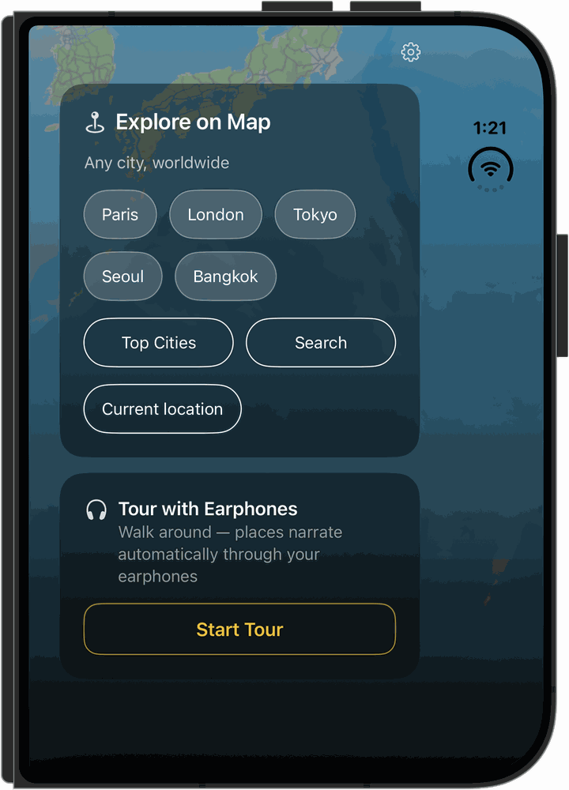

Cada lugar tem uma história
Guia de Áudio


Guia de Áudio
com IA para
Qualquer Cidade.
O CityYoYo oferece duas formas de explorar uma cidade a pé — toque em qualquer lugar do mapa para ouvir sua história, ou coloque os fones de ouvido e caminhe enquanto o Modo Passeio narra tudo automaticamente, sem usar as mãos.
Grátis · iOS & Android · English, 中文, 한국어, Español, Português, Français
